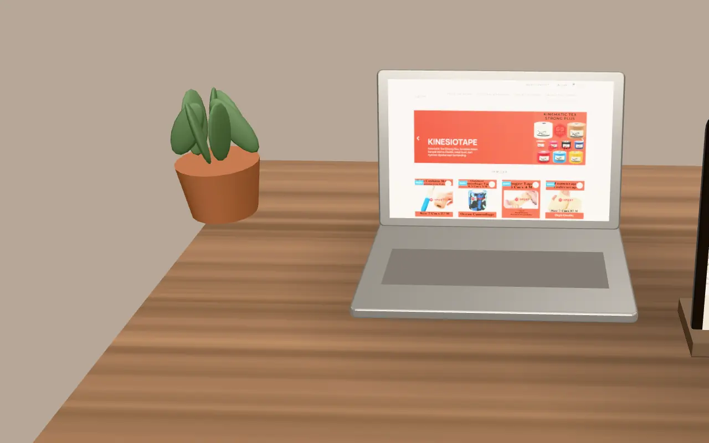
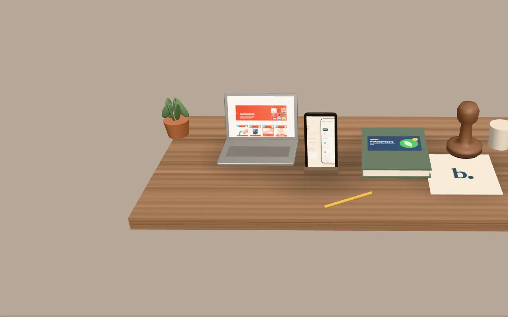

Empat benda di meja ini adalah empat layanan kami
Studio 3D Bikinin
Laptop untuk website, ponsel untuk aplikasi, buku untuk presentasi, stempel untuk logo. Gulir untuk mendekat, lalu pilih benda untuk membaca harganya.
Gulir untuk mendekat
Landing page sampai toko online
Laptop · Website
Landing page 1 halaman selesai sekitar 1 minggu. Company profile 4–6 halaman 2–3 minggu. Toko online 3–4 minggu.
Mulai Rp 400rb · Rp 1jt · Rp 2jt
landing page · company profile · toko online
Layar: toko GgStore (karya asli).
Harga perkenalan untuk 10 klien pertama. Total pasti ada di penawaran tertulis.
Tab untuk berpindah benda, Enter untuk membuka layanan.
Kasir, booking, atau katalog di ponsel
Ponsel · Aplikasi web
Aplikasi sederhana yang dibuat sesuai alur kerja usaha Anda. Pengerjaan 3–6 minggu. Contoh kasir dan booking bisa Anda buka.
Mulai Rp 3jt
Layar: aplikasi kasir Kopi Rindang (proyek konsep).
Harga perkenalan untuk 10 klien pertama. Total pasti ada di penawaran tertulis.
PPT untuk tugas, sidang, dan lomba
Buku · Presentasi
PPT tugas dikerjakan 1–3 hari, minimal 10 slide, file PPTX dan PDF. PPT sidang atau lomba 2–4 hari dengan 3 revisi.
Mulai Rp 3rb/slide · Rp 100rb per deck
Sampul: slide Fotosintesis (proyek konsep).
Harga perkenalan untuk 10 klien pertama. Total pasti ada di penawaran tertulis.
Logo orisinal, bukan dari template
Stempel · Logo
Logo Basic 2 konsep, Logo Standard 3 konsep dengan file vektor, Logo Premium dengan brand kit dan template sosmed.
Mulai Rp 75rb · Rp 200rb · Rp 500rb
Basic · Standard · Premium
Harga perkenalan untuk 10 klien pertama. Total pasti ada di penawaran tertulis.

Pilih satu benda, ceritakan kebutuhannya
Isi brief atau chat WhatsApp. Penawaran tertulis kami kirim setelah brief dipelajari, maksimal 1 hari kerja.